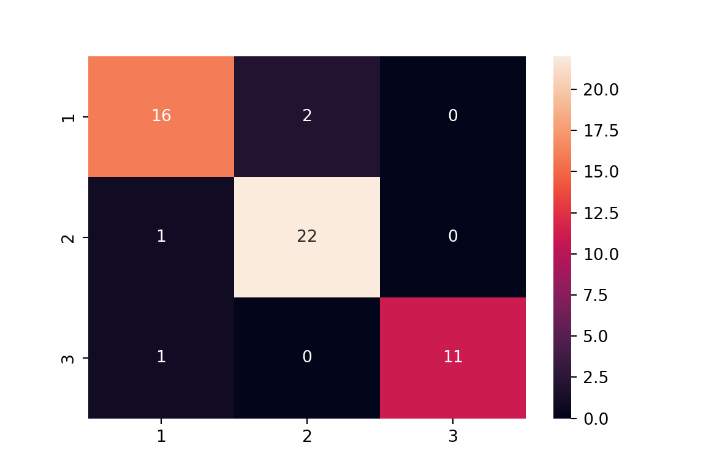
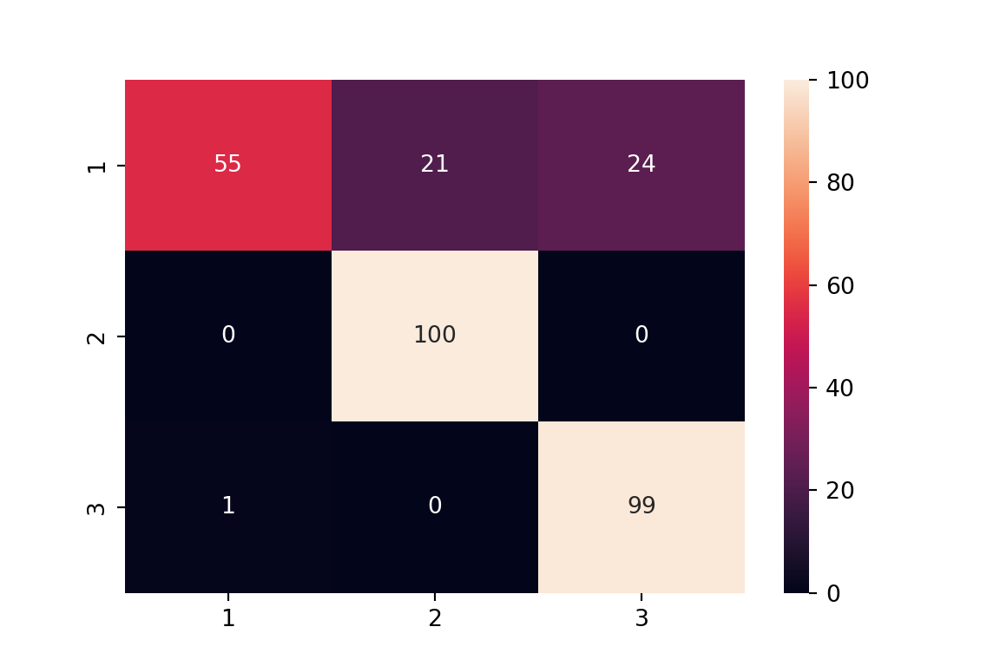
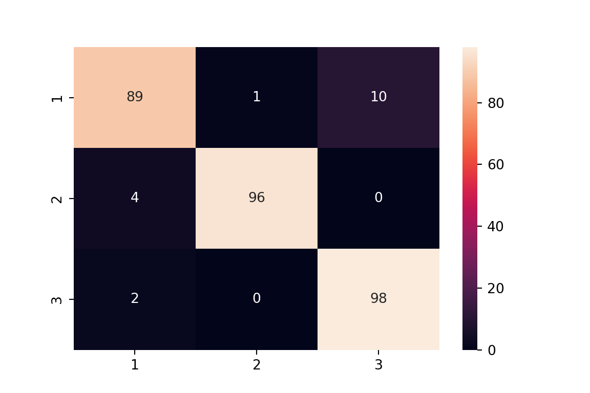

An EM Algorithm project
# !pip freeze | grep numpy
# !pip freeze | grep pandas
# !pip freeze | grep scikit-learnimport numpy as np
import pandas as pd
import warnings
warnings.filterwarnings('ignore')Since the data set is stored in a txt file, the data is read by the read_table() function of Pandas, and the separator is \t.
data = pd.read_table('seed.txt', sep='\t', names = ['x1', 'x2', 'x3', 'x4', 'x5', 'x6', 'x7','label'])
data.head() x1 x2 x3 x4 x5 x6 x7 label
0 15.26 14.84 0.8710 5.763 3.312 2.221 5.220 1
1 14.88 14.57 0.8811 5.554 3.333 1.018 4.956 1
2 14.29 14.09 0.9050 5.291 3.337 2.699 4.825 1
3 13.84 13.94 0.8955 5.324 3.379 2.259 4.805 1
4 16.14 14.99 0.9034 5.658 3.562 1.355 5.175 1Then, we subtract the value of data['label'] by 1, and the value range of the label is [0, 1, 2].
data['label'] = data['label'] - 1
data.head() x1 x2 x3 x4 x5 x6 x7 label
0 15.26 14.84 0.8710 5.763 3.312 2.221 5.220 0
1 14.88 14.57 0.8811 5.554 3.333 1.018 4.956 0
2 14.29 14.09 0.9050 5.291 3.337 2.699 4.825 0
3 13.84 13.94 0.8955 5.324 3.379 2.259 4.805 0
4 16.14 14.99 0.9034 5.658 3.562 1.355 5.175 0data.shape(210, 8)# Check for missing values
np.sum(data.isnull())x1 0
x2 0
x3 0
x4 0
x5 0
x6 0
x7 0
label 0
dtype: int64# The value of label 1, 2, 3
data['label'].value_counts()label
0 70
1 70
2 70
Name: count, dtype: int64class_label = np.unique(data['label'])
class_labelarray([0, 1, 2])data.info()<class 'pandas.core.frame.DataFrame'>
RangeIndex: 210 entries, 0 to 209
Data columns (total 8 columns):
# Column Non-Null Count Dtype
--- ------ -------------- -----
0 x1 210 non-null float64
1 x2 210 non-null float64
2 x3 210 non-null float64
3 x4 210 non-null float64
4 x5 210 non-null float64
5 x6 210 non-null float64
6 x7 210 non-null float64
7 label 210 non-null int64
dtypes: float64(7), int64(1)
memory usage: 13.3 KBdata.describe() x1 x2 x3 ... x6 x7 label
count 210.000000 210.000000 210.000000 ... 210.000000 210.000000 210.000000
mean 14.847524 14.559286 0.870999 ... 3.700201 5.408071 1.000000
std 2.909699 1.305959 0.023629 ... 1.503557 0.491480 0.818448
min 10.590000 12.410000 0.808100 ... 0.765100 4.519000 0.000000
25% 12.270000 13.450000 0.856900 ... 2.561500 5.045000 0.000000
50% 14.355000 14.320000 0.873450 ... 3.599000 5.223000 1.000000
75% 17.305000 15.715000 0.887775 ... 4.768750 5.877000 2.000000
max 21.180000 17.250000 0.918300 ... 8.456000 6.550000 2.000000
[8 rows x 8 columns]from sklearn.model_selection import cross_val_score
from sklearn.model_selection import GridSearchCV
from sklearn.model_selection import train_test_split
from sklearn.linear_model import LogisticRegression
from sklearn.metrics import classification_report, accuracy_score, confusion_matrixdef evaluate(pred,test_y):
import seaborn as sns
import matplotlib.pyplot as plt
import sklearn.metrics as metrics
# The accuracy rate of output classification
print("Accuracy: %.4f" % (metrics.accuracy_score(test_y,pred)))
# Output various indicators to measure the classification effect
print(classification_report(test_y, pred))
# More intuitively, we draw a confusion matrix through seaborn.
# %matplotlib inline
plt.figure(figsize=(6,4))
colorMetrics = metrics.confusion_matrix(test_y,pred)
# Coordinate y represents test_y, that is, the real category, and coordinate x represents the estimated category pred
sns.heatmap(colorMetrics, annot=True, fmt='d', xticklabels=[1,2,3], yticklabels=[1,2,3])
plt.show()## Data preparation
X = data.iloc[:, :-1]
y = data['label']
X_train, X_test, y_train, y_test = train_test_split(X, y, test_size=.25)lr = LogisticRegression()
param_dict = {'C': [0.001, 0.01, 0.1, 1, 10]}
gs = GridSearchCV(lr, param_grid = param_dict, scoring='accuracy')
gs.fit(X_train, y_train)GridSearchCV(estimator=LogisticRegression(),
param_grid={'C': [0.001, 0.01, 0.1, 1, 10]}, scoring='accuracy')In a Jupyter environment, please rerun this cell to show the HTML representation or trust the notebook. LogisticRegression(C=1)
pd.DataFrame(gs.cv_results_) mean_fit_time std_fit_time ... std_test_score rank_test_score
0 0.013668 0.006908 ... 0.063454 5
1 0.019644 0.001477 ... 0.056848 4
2 0.021322 0.001653 ... 0.043316 2
3 0.022585 0.001210 ... 0.048711 1
4 0.021061 0.000697 ... 0.043316 2
[5 rows x 14 columns]print (gs.best_params_){'C': 1}print (gs.best_score_)0.9165322580645162lr_cls = gs.best_estimator_
score = cross_val_score(lr_cls, X_train, y_train, cv = 10, scoring = 'accuracy')
print (np.mean(score))0.91625evaluate(y_test, lr_cls.predict(X_test))Accuracy: 0.9245
precision recall f1-score support
0 0.89 0.89 0.89 18
1 0.92 0.96 0.94 23
2 1.00 0.92 0.96 12
accuracy 0.92 53
macro avg 0.94 0.92 0.93 53
weighted avg 0.93 0.92 0.92 53
In this case, we use Python language to implement the Gaussian mix model. We divide the realisation process into two parts.
Calculate Expectation steps
In this step, we calculate the probability that each data record xn belongs to K labels \[\gamma_n(z_k) = p(z_k = 1 | x_n, \theta)\].
'''expectation_step函数
输入参数：X: 数据集
pis: p(z = 1)的概率
mus: 高斯分布的均值
sigmas: 高斯分布的协方差
返回参数： $x_{n}$分属K个标签的概率矩阵
''''expectation_step函数\n\n输入参数：X: 数据集\n pis: p(z = 1)的概率\n mus: 高斯分布的均值\n sigmas: 高斯分布的协方差\n\n返回参数： $x_{n}$分属K个标签的概率矩阵\n\n'def expectation_step(X, pis, mus, sigmas):
import numpy as np
from scipy.stats import multivariate_normal
gammas = np.array([value[0]*multivariate_normal(mean = value[1], cov = value[2]).pdf(X) for value in zip(pis, mus, sigmas)])
return gammas / gammas.sum(axis = 0)In this step, we aim at the logarithmic great likelihood function of complete data and update the parameters pis, mus, sigmas
'''maximization_step函数
输入参数：X: 数据集
gammas：$x_{n}$分属K个标签的概率矩阵
pis: p(z = 1)的概率
mus: 高斯分布的均值
sigmas: 高斯分布的协方差
''''maximization_step函数\n\n输入参数：X: 数据集\n gammas：$x_{n}$分属K个标签的概率矩阵\n pis: p(z = 1)的概率\n mus: 高斯分布的均值\n sigmas: 高斯分布的协方差\n'
def maximization_step(X, gammas, pis, mus, sigmas):
# renew pis
pis = gammas.sum(axis = 1) / gammas.shape[1]
# renew mus
mus = np.multiply(1.0/gammas.sum(axis = 1).reshape(-1, 1), np.dot(gammas, X))
# renew sigmas
for k in range(len(sigmas)):
centered_X = X - mus[k]
sigmas[k] = np.dot(np.multiply(gammas[k], centered_X.T), centered_X) / gammas[k].sum()
Update the lower bound lower_bound of the maximum likelihood function.
'''cal_lower_bound函数
输入参数：X: 数据集
gammas：$x_{n}$分属K个标签的概率矩阵
pis: p(z = 1)的概率
mus: 训练得到的高斯分布的均值
sigmas: 训练得到的高斯分布的协方差
返回参数：对数最大似然函数的下界
''''cal_lower_bound函数\n\n输入参数：X: 数据集\n gammas：$x_{n}$分属K个标签的概率矩阵\n pis: p(z = 1)的概率\n mus: 训练得到的高斯分布的均值\n sigmas: 训练得到的高斯分布的协方差\n\n返回参数：对数最大似然函数的下界\n\n'
def cal_lower_bound(X, gammas, pis, mus, sigmas):
from scipy.stats import multivariate_normal
lower_bound = 0
for gamma, pi, mu, sigma in zip(gammas, pis, mus, sigmas):
lower_bound += np.multiply(gamma, np.log(pi*multivariate_normal(mu, sigma).pdf(X)))
return lower_bound.sum()Next, we implement the train_GMM function to calculate the statistical characteristics of each Gaussian distribution.
'''train_GMM函数
输入参数：X: 数据集
k: 高斯分布的个数
max_iter: 迭代的最高次数
alpha: 最大似然函数下界收敛的阈值
返回参数：(mus, sigmas)以元组形式返回参数
mus: 高斯分布的均值 K times d
sigmas：高斯分布的协方差 d times d
''''train_GMM函数\n\n输入参数：X: 数据集\n k: 高斯分布的个数\n max_iter: 迭代的最高次数\n alpha: 最大似然函数下界收敛的阈值\n \n \n返回参数：(mus, sigmas)以元组形式返回参数\n mus: 高斯分布的均值 K times d\n sigmas：高斯分布的协方差 d times d\n \n'def train_GMM(X, K, max_iter, alpha):
indicator = 0
lower_bound = 0
# Initialisation
N, d = X.shape
d = d - 1
# Initialise pi, a one-dimensional array, that is, the vector of K times 1
pis = np.random.random(K)
pis /= pis.sum()
# Initialise mu, a two-dimensional array, that is, the matrix of K times d
#mus = np.random.random((K, d))
mus = np.array([X[X['label'] == num].mean()[:-1] for num in range(K)])
# Initialise the sigmas three-dimensional array, that is, an array with a length of K and an element of d times d matrix
sigmas = np.array([np.eye(d)] * K)
X_hat = X.iloc[:,:-1].values
while indicator <= max_iter:
lower_bound_old = lower_bound
# E-step
gammas = expectation_step(X_hat, pis, mus, sigmas)
# M-step
maximization_step(X_hat, gammas, pis, mus, sigmas)
# Update 下界
lower_bound = cal_lower_bound(X_hat, gammas, pis, mus, sigmas)
# Check the termination conditions
if abs(lower_bound - lower_bound_old) < alpha:
print ('reach stopping criterion!')
break
# The number of update iterations
indicator += 1
return (mus, sigmas)After calculating the parameters of the Gaussian distribution, we need to determine the probability of the sample coming from each distribution. That is to say, substitute the sample into the density function of the distribution, calculate its density, take the distribution with the maximum value as the overall distribution of the sample, and attribute the sample to the class where the sample is located.
'''predict函数
输入参数： X：数据集
mus: 各个高斯分布的均值 K time d
sigmas: 各个高斯分布的协方差 K times 1 元素为d times d 矩阵
输出参数：数据集的各个数据记录所对应的标签(如0,1,2)
''''predict函数\n\n输入参数： X：数据集\n mus: 各个高斯分布的均值 K time d\n sigmas: 各个高斯分布的协方差 K times 1 元素为d times d 矩阵\n\n输出参数：数据集的各个数据记录所对应的标签(如0,1,2)\n\n'
def predict(X, mus, sigmas):
from scipy.stats import multivariate_normal
labels = np.zeros(X.shape[0])
for index, item in enumerate(X.iloc[:,:-1].values):
probs = [multivariate_normal(mu, sigma).pdf(item) for mu, sigma in zip(mus, sigmas)]
labels[index] = probs.index(max(probs))
return labelsWe man-madely generate 300 data samples from 3 different Gaussian distributions to form a verification data set.
# Generate data from Gaussian mixed distribution
# The data set comes from 3 Gaussian distributions, each of which produces 100 data samples, and the dimension of the data set is 2
#np.random.seed(5)
mus = [[0, 4], [-2, 0], [4, 4]]
sigs = [[[3, 0], [0, 0.5]], [[1, 0], [0, 2]], [[1, 0], [0,1]]]
# Data set X
multi_data = [np.random.multivariate_normal(mu, sig, 100) for mu, sig in zip(mus, sigs)]
data = np.vstack(multi_data)
## The category labels of the data set are 0, 1, 2
labels = [[value]*100 for value in range(3)]
## Flatten the nested array labels
multi_labels = [y for x in labels for y in x]
# Data set tag merge
final_data = []
for v1, v2 in zip(data, multi_labels):
list_v1 = v1.tolist()
list_v1.append(v2)
final_data.append(list_v1)
##np.random.shuffle(final_data)Convert the data set into the DataFrame format in Pandas.
final_data = pd.DataFrame(final_data, columns = ['x1', 'x2', 'label'])
final_data.head() x1 x2 label
0 -0.931980 3.532604 0
1 -1.847593 3.340459 0
2 3.007854 3.818368 0
3 0.387433 4.447576 0
4 0.991425 5.487675 0After the test data set is ready, we substitute final_data into the function for calculation.
mus, sigmas = train_GMM(final_data, 3, 1000, 1e-5)reach stopping criterion!# The average value generated according to the training set
musarray([[ 0.08283393, 4.00698383],
[-1.95228534, 0.00786146],
[ 3.90548691, 3.96768819]])# Covariance generated according to the training set
sigmasarray([[[ 0.44263392, -0.2039584 ],
[-0.2039584 , 0.29993582]],
[[ 1.21191301, 0.80259811],
[ 0.80259811, 4.98485427]],
[[ 1.14181398, -0.00643319],
[-0.00643319, 1.16002828]]])# The labelled predicted on the training set
label_pred = predict(final_data, mus, sigmas)
print (label_pred)[0. 1. 2. 0. 2. 0. 2. 2. 1. 1. 0. 2. 2. 2. 0. 1. 0. 1. 0. 0. 1. 2. 0. 2.
1. 0. 0. 0. 0. 0. 0. 2. 0. 0. 2. 2. 2. 0. 0. 0. 0. 1. 0. 2. 0. 0. 0. 0.
0. 2. 1. 2. 0. 1. 0. 2. 0. 0. 1. 1. 2. 0. 0. 2. 0. 0. 1. 0. 1. 1. 1. 0.
0. 0. 1. 2. 0. 0. 0. 0. 2. 0. 2. 1. 0. 0. 0. 1. 0. 1. 2. 0. 0. 1. 2. 0.
0. 0. 0. 0. 1. 1. 1. 1. 1. 1. 1. 1. 1. 1. 1. 1. 1. 1. 1. 1. 1. 1. 1. 1.
1. 1. 1. 1. 1. 1. 1. 1. 1. 1. 1. 1. 1. 1. 1. 1. 1. 1. 1. 1. 1. 1. 1. 1.
1. 1. 1. 1. 1. 1. 1. 1. 1. 1. 1. 1. 1. 1. 1. 1. 1. 1. 1. 1. 1. 1. 1. 1.
1. 1. 1. 1. 1. 1. 1. 1. 1. 1. 1. 1. 1. 1. 1. 1. 1. 1. 1. 1. 1. 1. 1. 1.
1. 1. 1. 1. 1. 1. 1. 1. 2. 2. 2. 2. 2. 2. 2. 2. 2. 2. 2. 2. 2. 2. 2. 2.
2. 2. 0. 2. 2. 2. 2. 2. 2. 2. 2. 2. 2. 2. 2. 2. 2. 2. 2. 2. 2. 2. 2. 2.
2. 2. 2. 2. 2. 2. 2. 2. 2. 2. 2. 2. 2. 2. 2. 2. 2. 2. 2. 2. 2. 2. 2. 2.
2. 2. 2. 2. 2. 2. 2. 2. 2. 2. 2. 2. 2. 2. 2. 2. 2. 2. 2. 2. 2. 2. 2. 2.
2. 2. 2. 2. 2. 2. 2. 2. 2. 2. 2. 2.]## Model evaluation
evaluate(label_pred, final_data['label'].values)Accuracy: 0.8467
precision recall f1-score support
0 0.98 0.55 0.71 100
1 0.83 1.00 0.90 100
2 0.80 0.99 0.89 100
accuracy 0.85 300
macro avg 0.87 0.85 0.83 300
weighted avg 0.87 0.85 0.83 300
from sklearn.mixture import GaussianMixturegmm_model = GaussianMixture(n_components = 3, covariance_type = 'diag', init_params='random', max_iter=200)
gmm_model.means_init = np.array([final_data[final_data['label'] == num].mean(axis = 0)[:-1] for num in range(3)])
gmm_model.fit(final_data.iloc[:,:-1])GaussianMixture(covariance_type='diag', init_params='random', max_iter=200,
means_init=array([[ 0.08283393, 4.00698383],
[-1.95228534, 0.00786146],
[ 3.90548691, 3.96768819]]),
n_components=3)In a Jupyter environment, please rerun this cell to show the HTML representation or trust the notebook. y_pred = gmm_model.predict(final_data.iloc[:,:-1])
diff = y_pred - final_data['label'].values
evaluate(y_pred, final_data['label'].values)Accuracy: 0.9433
precision recall f1-score support
0 0.94 0.89 0.91 100
1 0.99 0.96 0.97 100
2 0.91 0.98 0.94 100
accuracy 0.94 300
macro avg 0.94 0.94 0.94 300
weighted avg 0.94 0.94 0.94 300
Next, we check the mean and covariance matrix obtained from the training.
gmm_model.means_array([[-0.02949603, 3.9916317 ],
[-1.96205268, -0.02705043],
[ 3.87500359, 3.97195425]])gmm_model.covariances_array([[3.11482924, 0.4759699 ],
[0.74888026, 1.91437032],
[0.79579616, 1.27191782]])Use the Gaussian Mixture model in sklearn to check whether the data set is suitable for using the Gaussian hybrid model.
gmm_model = GaussianMixture(n_components = 3, covariance_type = 'diag', init_params='random', max_iter=200)
gmm_model.means_init = np.array([final_data[final_data['label'] == num].mean(axis = 0)[:-1] for num in range(3)])
gmm_model.fit(final_data.iloc[:,:-1])GaussianMixture(covariance_type='diag', init_params='random', max_iter=200,
means_init=array([[ 0.08283393, 4.00698383],
[-1.95228534, 0.00786146],
[ 3.90548691, 3.96768819]]),
n_components=3)In a Jupyter environment, please rerun this cell to show the HTML representation or trust the notebook. y_pred = gmm_model.predict(final_data.iloc[:,:-1])
diff = y_pred - final_data['label'].values
evaluate(y_pred, final_data['label'].values)Accuracy: 0.9400
precision recall f1-score support
0 0.94 0.88 0.91 100
1 0.99 0.96 0.97 100
2 0.90 0.98 0.94 100
accuracy 0.94 300
macro avg 0.94 0.94 0.94 300
weighted avg 0.94 0.94 0.94 300The accuracy rate is close to 90%, and the data set can be classified using the Gaussian hybrid model, that is, it is considered that all parts of the data set obey the Gaussian distribution. Next, we use a customised model to fit the data set.
First, use the data set to train the model. We set the number of Gaussian distributions in the model to 3, the number of iterations to 2000, and the threshold of the termination condition to 1e-5.
EPSILON = 1e-6 # numerical stability constant
def expectation_step(X, pis, mus, sigmas):
gammas = []
for pi, mu, sigma in zip(pis, mus, sigmas):
# Regularize sigma before computing pdf
sigma_reg = sigma + np.eye(sigma.shape[0]) * EPSILON
pdf_vals = multivariate_normal(mu, sigma_reg, allow_singular=True).pdf(X)
gammas.append(pi * pdf_vals)
gammas = np.array(gammas) # shape: (K, N)
# Avoid division by zero in normalization
total = gammas.sum(axis=0, keepdims=True)
total = np.where(total == 0, EPSILON, total)
gammas /= total
return list(gammas)
def maximization_step(X, gammas, pis, mus, sigmas):
N = X.shape[0]
for k, gamma in enumerate(gammas):
Nk = gamma.sum() + EPSILON # avoid division by zero
pis[k] = Nk / N
mus[k] = (gamma[:, None] * X).sum(axis=0) / Nk
diff = X - mus[k]
sigmas[k] = (gamma[:, None] * diff).T @ diff / Nk
# Regularize covariance to prevent collapse
sigmas[k] += np.eye(sigmas[k].shape[0]) * EPSILON
def cal_lower_bound(X, gammas, pis, mus, sigmas):
lower_bound = 0
for gamma, pi, mu, sigma in zip(gammas, pis, mus, sigmas):
sigma_reg = sigma + np.eye(sigma.shape[0]) * EPSILON
pdf_vals = multivariate_normal(mu, sigma_reg, allow_singular=True).pdf(X)
# Clip before log to avoid log(0) = -inf
log_vals = np.log(np.clip(pi * pdf_vals, EPSILON, None))
lower_bound += np.multiply(gamma, log_vals)
return lower_bound.sum()The train_GMM() function returns the parameter values of each Gaussian distribution component.
## Mean value
musarray([[ 0.08283393, 4.00698383],
[-1.95228534, 0.00786146],
[ 3.90548691, 3.96768819]])## Covariance matrix
sigmasarray([[[ 0.44263392, -0.2039584 ],
[-0.2039584 , 0.29993582]],
[[ 1.21191301, 0.80259811],
[ 0.80259811, 4.98485427]],
[[ 1.14181398, -0.00643319],
[-0.00643319, 1.16002828]]])For attribution, please cite this work as
Wu (2025, April 2). Longxiang Wu: Classification of Wheat Grains. Retrieved from https://lunghsiang-wu.github.io/longxiangwu/portfolio/2026-03-20-wheat/
BibTeX citation
@misc{wu2025classification,
author = {Wu, Longxiang},
title = {Longxiang Wu: Classification of Wheat Grains},
url = {https://lunghsiang-wu.github.io/longxiangwu/portfolio/2026-03-20-wheat/},
year = {2025}
}